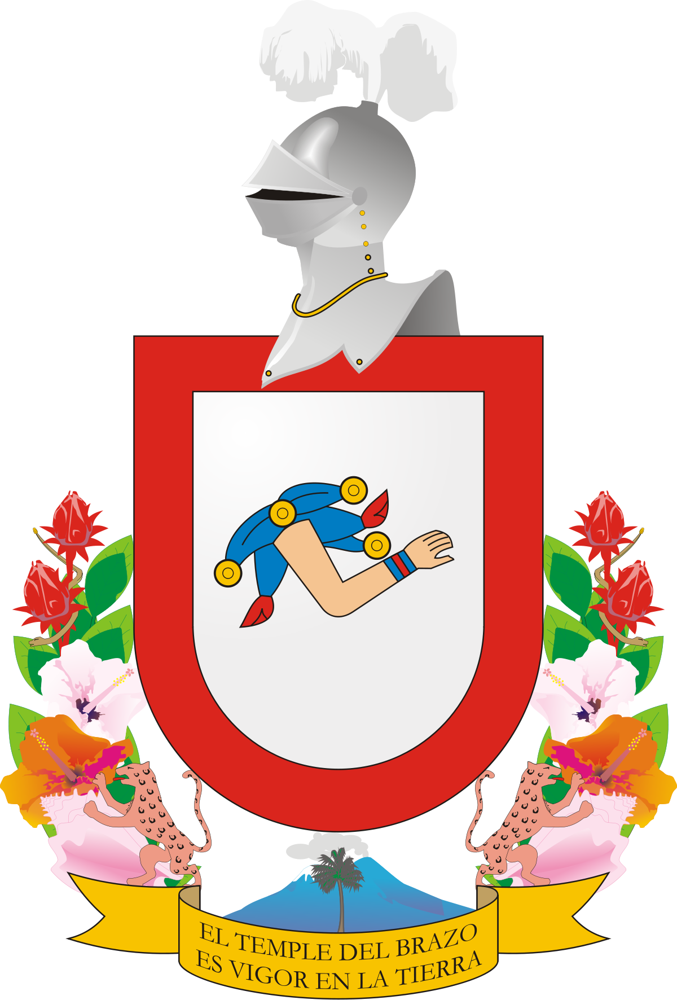
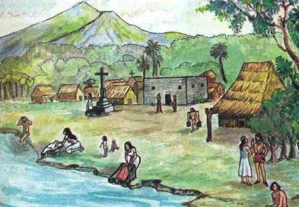
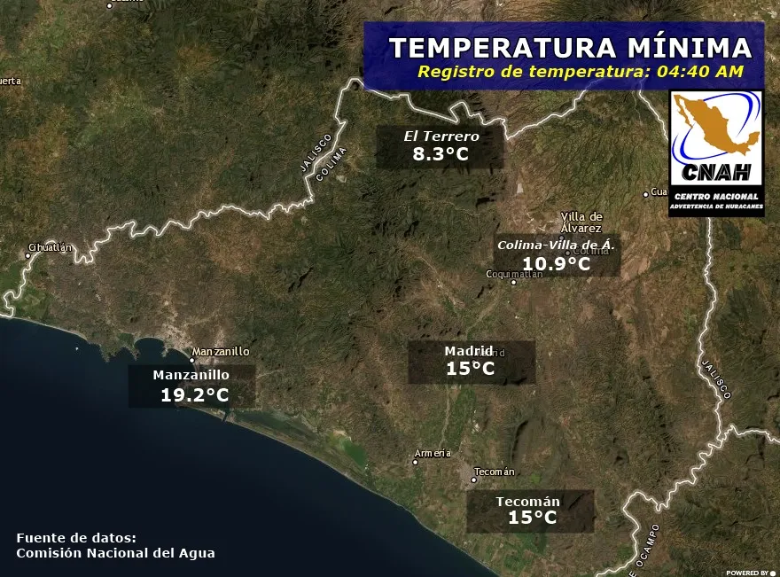
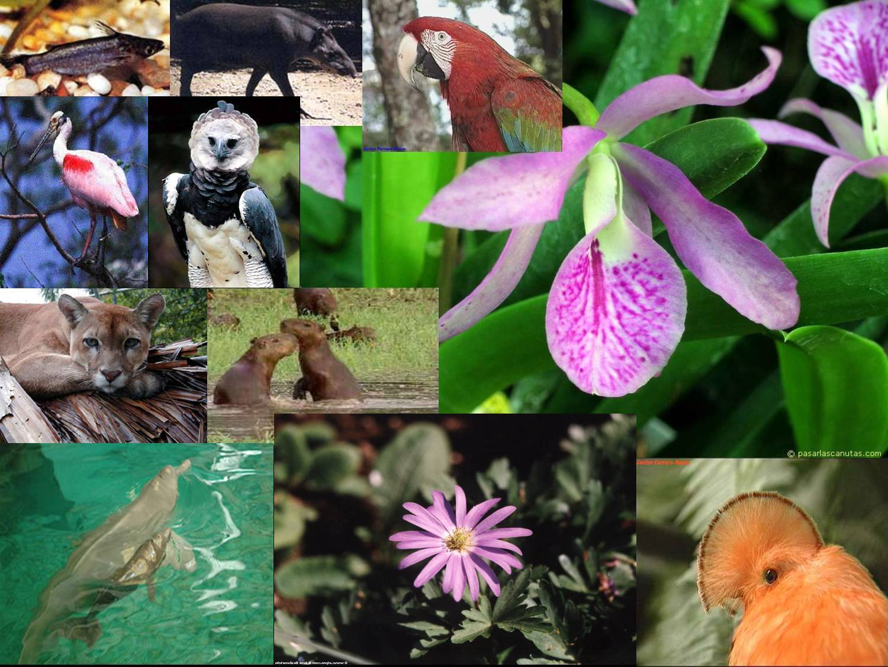
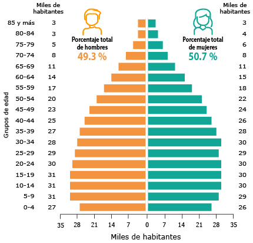
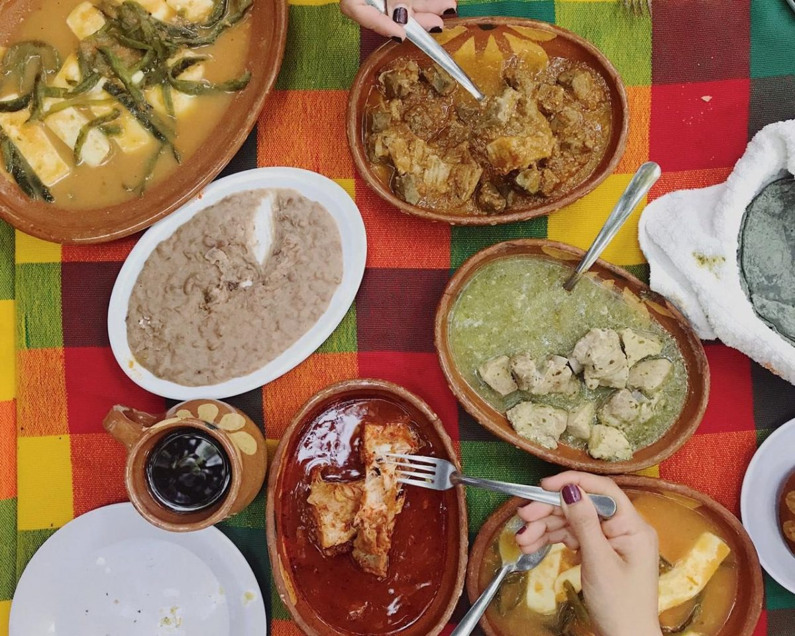
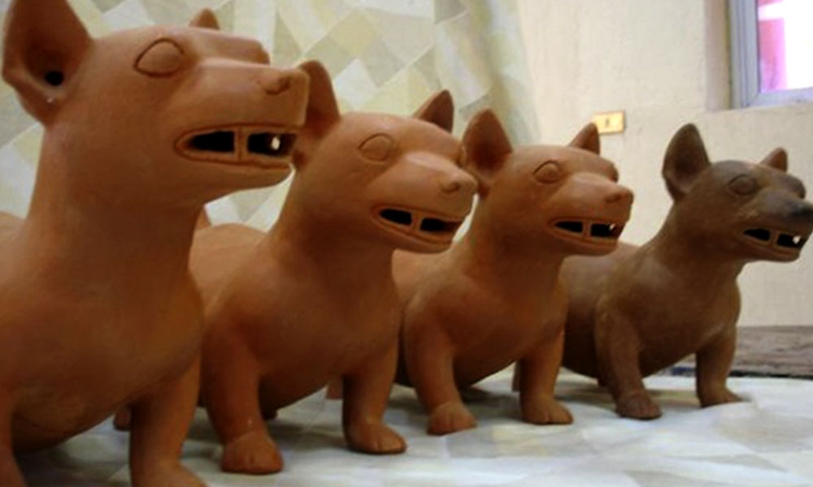
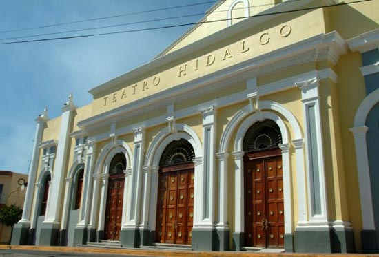
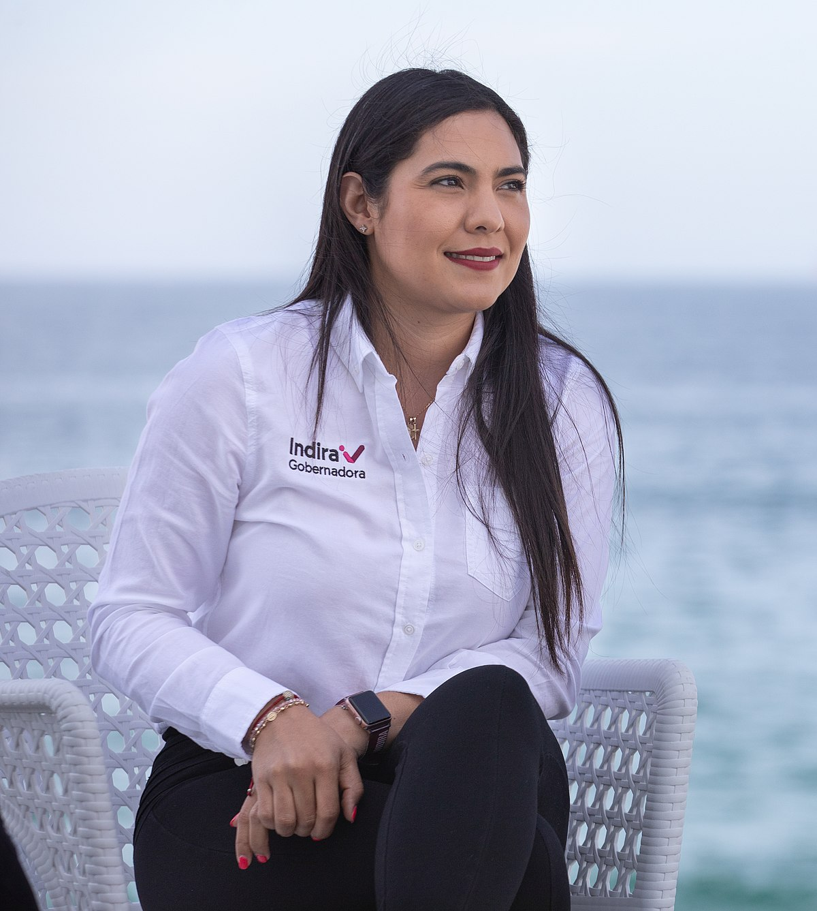

COLIMA
Colima (Speaker Icon.svg escuchar), oficialmente Estado Libre y Soberano de Colima, es uno de los treinta y un estados que, junto con la Ciudad de México, forman México. Su capital es la ciudad homónima y la ciudad más poblada es Manzanillo. Está dividido territorialmente en diez municipios.
Está ubicado en la región oeste del país, colindando al norte con Jalisco, al sur con Michoacán y al oeste con el océano Pacífico. Con 711,235 habitantes en 2015, es el estado menos poblado, con 5,627 km², el cuarto menos extenso —por delante de Aguascalientes, Morelos y Tlaxcala, el menos extenso— y con 115.65 hab / km², el noveno más densamente poblado, por detrás del Estado de México, Morelos, Tlaxcala, Aguascalientes, Guanajuato, Puebla, Querétaro e Hidalgo.
Fue fundado el 9 de diciembre de 1856.
Aparte de su capital y de su ciudad más poblada, otras localidades importantes son Manzanillo, Tecomán, Armería, Comala, Villa de Álvarez, Cuauhtémoc, Ixtlahuacán, Coquimatlán y Minatitlán.
TOPONIMIA
Colima es derivado del nahuatl "Acollima" o "Acolliman", compuesto de "atl" (agua), "colic" (torcido o doblado) y la terminación locativa "-man", traducido como "(el) lugar donde se doblan las aguas" o "(lugar en) el recodo del río".
Fundada en 1523 originalmente como Villa de San Sebastián, el nombre de Colima viene del náhuatl Acolman, que significa "lugar donde tuerce el agua" o "lugar donde hace recodo el río". El territorio de Colima, del que casi tres cuartas partes de superficie están cubiertas por montañas y colinas, queda comprendido dentro de una derivación de la Sierra Madre del Sur, que se compone de cuatro sistemas montañosos.
A pesar de ser una pequeña entidad, Colima posee monumentos históricos como su catedral basílica menor, construcción que se empezó en 1525 de estilo predominántemente neoclásico aunque también muestra algunos rasgos arquitectónicos de estilos barroco y gótico; el Palacio de Gobierno, con los magníficos murales del pintor colimense Jorge Chávez Carrillo, que ilustran temas históricos relativos a la Conquista, la Colonización y la Guerra de Independencia. Otros lugares culturales y arquitectónicos que destacan son: El Teatro Hidalgo, que data del siglo XIX; el Templo de San Francisco del Pilón, fundado en 1554; la Casa de la Cultura, con una increíble biblioteca, sala de exposiciones, auditorio y talleres de diversas actividades artísticas.
El estado costero de Colima continúa sus límites océano adentro, hasta las islas Revillagigedo; reservas ecológicas, pobladas únicamente por aves marinas y por los miembros de la armada que resguardan esta frontera del país. Las zonas conurbadas de la ciudad de Colima y de la ciudad de Villa de Álvarez, han engullido sitios que hasta ya muy avanzado el siglo XX se encontraban en las afueras de esa mancha urbana, como San Francisco de Almoloyan o las zonas arqueológicas de La Campana y El Chanal.

HISTORIA
Durante la era prehispánica, la región que hoy ocupa el estado de Colima fue el punto de asiento de varios grupos étnicos que florecieron en el Occidente Mexicano. La región estuvo habitada por varios señoríos que se disputaban el territorio antes de la llegada de los conquistadores españoles. A principios del siglo XVI, los purépecha alcanzaron a dominar hasta las salitreras de Tzacoalco, propiedad de los tecos, a causa de esto el rey Colimán o Tlatoani Colimotl les hacía la guerra y en muchas ocasiones les derrotó, tras la Guerra del Salitre con la que los Tecos tomaron Sayula, Zapotlán y Amula e incluso alcanzaron a llevar su dominio hasta Mazamitla, logrando que el señorío de Colima se convirtiera en el grupo predominante.
Después de que los europeos llegaron a un acuerdo con los purépechas, un emisario de Hernán Cortés, de nombre Francisco Montaño, de los primeros que se había aventurado hasta la capital del imperio Purépecha, Tzintzuntzan, recogió y dio a conocer a sus superiores información que decía que al poniente del Señorío del Caltzontzin se encontraba un lugar dominado por el rey Colimotl. Hernán Cortés, pensó en conquistar Colima, pero Juan Rodríguez de Villafuerte precipitó sus planes al desobedecer sus órdenes y ser el primero en explorar la zona, a su llegada a Trojes es derrotado en una emboscada del Rey Colimán. Poco después Cortés decidió encargarle la empresa a Francisco Álvarez Chico. Este salió con un pequeño ejército por el camino de Toluca, hacia la costa del señorío Purépecha, hoy Michoacán.

Al cruzar con los suyos por un pequeño desfiladero, los guerreros del Rey Colimotl atacaron por sorpresa, Francisco Álvarez Chico junto con otros soldados fueron derrotados en el Paso de Alima y/o Palenque de Tecomán. Después de esta derrota se organizó una nueva expedición, llamada punitiva, que le fue confiada a Cristóbal de Olid que en 1522 había sido enviado a terminar de conquistar el Señorío Purépecha en nombre de Hernán Cortés, pero fracasa en llegar a la tierra del Rey Colimotl. Cortés confía la siguiente expedición a Gonzalo de Sandoval, que finalmente derrota en el Palenque de Tecomán a los tecos o colimecas, donde se rindió el rey Colimán.
Tras consumarse la conquista de México, el mismo Gonzalo de Sandoval fundó en Caxitlán la Villa de Colima en términos de Tecomán, el 25 de julio de 1523, pero debido a problemas de insalubridad tuvo que trasladar el asentamiento al lugar que hoy ocupa, denominándola Villa de San Sebastián. En 1533 Hernando de Grijalva zarpó desde las costas de la región para descubrir el Archipiélago de Revillagigedo.
La Orden de la Merced, también conocida como Los Mercedarios, funda en 1607 un convento en toda forma en la entonces Villa de San Sebastián, pero lamentablemente no sobreviven las ruinas que atestiguaban tan importante institución educativa de Colima. Durante la época Virreinal el Puerto de Tzalahua (Manzanillo) se destacó como un importante sitio de defensa y comercio para la Nueva España. Durante el movimiento de independencia, la capital fue tomada por los insurgentes a finales de 1810 sin encontrar resistencia realista y fue recuperada por el ejército virreinal en 1811. Finalmente en 1857 Colima alcanzó la categoría de estado.
El 5 de noviembre de 1864 es la fecha que quedó inscrita en la historia de Colima, al quedar incorporada a la lista de ciudades durante la Segunda Intervención Francesa en México.
Exiliado Benito Juárez en los lejanos territorios del norte del país, siendo el coronel Julio García gobernador del Estado, hizo su entrada a la ciudad la Brigada Doway con la que se otorgó protección y abrigo administrativo quedando el estado de Colima incorporado política y administrativamente al gobierno que encabezaba Maximiliano I.
GEOGRAFÍA
CLIMA
El clima de Colima puede ser muy variado, aunque predomina la humedad. En el norte del Estado el clima es cálido subhúmedo, mientras que en las sierras se presenta un clima semicálido subhúmedo y las llanuras de Tecomán tienen un clima cálido semiseco. En la zona costera y en la cuenca del río Armería el clima es cálido y húmedo. La temperatura promedio anual en el Estado es de 28 °C y oscila entre una máxima de 38 °C y una mínima de 12 °C. Uno de los mayores atractivos de Colima es la benignidad de su clima. La pequeña geografía del Estado permite disfrutar, en un recorrido de hora y media, el clima templado de la montaña o el calor tropical de sus playas para una elección de climas. La temperatura media anual oscila alrededor de los 25 °C, con la máxima de 38 °C y la mínima de 7 °C. La precipitación pluvial anual media es de 983 milímetros. El clima de Colima se ve influenciado en gran manera por su relieve montañoso, el cual cubre el oeste, el norte y la parte este de la entidad. Las penetraciones de las sierras jaliscienses forman las zonas más elevadas: Cerro Gordo, sierras de Perote, El Peón y las estribaciones del volcán de Colima. La serranía de Picila limita por el sur el amplio valle de Colima, al sur, las llanuras de Tecomán terminan en un litoral bajo y arenoso. Estas sierras, por su latitud y exposición, permiten que las precipitaciones sean mayores y que el clima sea diferente en relación con las partes bajas del estado. En la zona costera y en la cuenca del río Armería el clima es cálido y húmedo, mientras que en la parte alta es templado y cálido en la zona sur. Su temperatura promedio anual es de 28 °C y oscila entre una máxima de 38 °C y una mínima de 12 C°.

FLORA Y FAUNA
Existen diversas especies de flora, según la región de que se trate: en las partes altas predominan el pino, roble, encino, arrayán; en los valles hay especies forrajeras y frutales como mango, papaya, tamarindo, palma de coco; mientras que la costa cuenta con guamúchil, guayacán, mezquite, chicalite, crucillo y mangle. De este último podemos encontrar dos clases: el mangle blanco y el mangle rojo. Ambos juegan un papel muy importante en la preservación del equilibrio en los ecosistemas que se refieren al estero, que es donde se une el mar con agua dulce, además de que es una irreemplazable barrera natural contra posibles tsunamis, huracanes e inundaciones.
Por otra parte las palmas de coco (o palmeras, como se les conoce comúnmente en este Estado) son por excelencia uno de los principales símbolos colimenses y puede encontrárselas prácticamente en todo el Estado.
Por su diversidad de ecosistemas, en el Estado de Colima existe una extensa variedad de fauna silvestre: ardilla, jabalí de collar, venado cola blanca, ocelote, tigrillo, zorra en las sierras; mientras que en los valles hay especies como tapacaminos, torcaza, zanate, tlacuache, tzentzontle, conejo y coyote. Respecto de la fauna marina, esta se conforma por pez dorado, tiburón, cornuda, aguijón, tortuga de carey, entre otros.

POBLACIÓN
Según las cifras que arrojó el Censo de Población y Vivienda 2020 realizado por el Instituto Nacional de Estadística y Geografía (INEGI) en el año 2020, el estado de Colima contaba hasta entonces con un total de 731,391 habitantes, de dicha cantidad, 360,622 eran hombres y 370,769 eran mujeres. La tasa de crecimiento anual para la entidad durante el período 2010-2020 fue del 12.4 %.

CULTURA
Oficialmente llamados colimenses. Se mencionan otros gentilicios por ejemplo colimote(a), colimeño(a). Una leyenda colimense lo describe como alguien tranquilo, relajado, hospitalario, feliz. Sentado bajo la apacible sombra de una palmera en una de las tantas plazas de la ciudad, se refresca bebiendo sorbos de una fría tuba. A su alrededor, pintorescas casas adornan las calles y numerosas palmeras cocoteras se mecen al compás del dulce viento con olor a sal. Uno de los grandes placeres de los colimenses es la cocina. Debido a lo cual numerosos platillos típicos adornan sus mesas, preparados principalmente a base de maíz, frutas, carne de cerdo, pescados y mariscos.
Diversas variedades de tamales de maíz, sopes cubiertos de picadillo, de pata, de lomo o de pollo; langostinos de río preparados en caldo, moyos o cangrejo moro guisado a la diabla, pozole de cerdo y el tatemado de carne de cerdo deleitan los paladares de locales y visitantes. Además, se distingue por su originalidad el ceviche colimense y el pescado a la talla. También, los dulces postres de frutas como alfajor de piña, cocada, rollos de guayaba, plátanos deshidratados y dulces de tamarindo destacan por su rico sabor. Para refrescarse basta con buscar un “tubero”, personaje típicamente colimense que no duda en trepar por una palmera para bajar con lo que será el néctar que sofocará cualquier calor, la tuba.
Y es que, aunque originario de Filipinas, en México el tubero es colimense. Profesión transmitida de generación en generación, el tubero obtiene el néctar de la espiga de las flores de la palma de coco para preparar una refrescante y deliciosa bebida que junto con el tejuino y el bate forman parte de la tradición colimeña de bebidas naturales. El “mariachi de arpa”, que sustituye a la tradicional trompeta por un arpa), es la expresión musical típica de los colimeños. Al compás de los sones y jarabes más tradicionales alegres danzantes y devotos festejan alguna de las muchas fiestas patronales católicas de cada comunidad. Los sones más representativos del estado son El Camino Real de Colima, Las Comaltecas, El Perico Loro, El Palmero, El Pasacalles, La Iguana de Tecomán, El Pedregal, El Pitayero y Los Morismas. Los tejidos de otate, de carrizo y del zopilotote construyen hermosas artesanías de gran valor artístico. Los artesanos de Suchitlán producen todo tipo de canastas y cestos que han dado a la región fama internacional.
GASTRONOMÍA
Entre los platillos colimenses más gustados y representativos del Estado están los sopitos -pequeñas tostadas cubiertas con picadillo y bañadas en "jugo"-; los sopes gordos, de pata, lomo de cerdo o pollo; y las tostadas de las mismas carnes y preparadas sobre tortillas raspadas y doradas. El pozole (maíz cocido) con carne de cerdo es la merienda tradicional, con la característica de ser seco y jugoso, estos platillos se pueden degustar en la famosas cenadurías que existen por toda la ciudad. Otros guisos típicos son el tatemado -carne de cerdo macerada en vinagre de coco y guisada en chile colorado-, la pepena -vísceras de res guisadas-; y la cuachala -maíz martajado y cocido con pollo deshebrado-. Las variedades locales del tamal son pata de mula -de frijol, envueltos en "hoja" de maíz, no en totomoxtle-; los de carne y los de elote tierno, así como los de ceniza. Comala se distingue por la producción de productos lácteos, como quesillo ranchero, panela y crema, así como los populares ponches bebida alcohólica, preparada mezclando aguardiente de caña o licor con agua, azúcar, café, cacahuete y otras frutas siendo en especial el ponche de granada la combinación más popular, así mismo se distingue por sus botaneros alegres lugares para pasar un rato a gusto con la familia; también, junto con Villa de Álvarez, por su pan dulce, del que destacan los bonetes o picón de huevo.
Las bebidas tradicionales en tiempos de calor la tuba, el bate y el tejuino. Durante la temporada de lluvias es posible disfrutar los chacales, o langostinos de río, preparados en caldo. Igualmente en ese tiempo, en la costa, los moyos -variedad del cangrejo moro-, guisado a la diabla. Existen criaderos de langostinos que aseguran el abasto permanente de esta delicia culinaria, disfrutable en caldos, a la mantequilla, al ajo o simplemente cocidos. Diferente a la forma que tiene de preparase en los estados vecinos, el ceviche de Colima se hace desmenuzando finamente el pescado (pez sierra de preferencia) y cociéndolo en jugo de limón de Tecomán y mezclándole zanahoria, cebolla, cilantro, jitomate; además que el ceviche se puede hacer con camarón. El pescado a la talla es una especialidad muy apreciada. Se prepara con un pescado entero, abierto y cubierto con verdura picada, luego envuelto en hoja de plátano y asado a las brasas.

ARTESANÍAS
En Colima la magia y la imaginación se han transformado en una rica y variada artesanía, que conjuga el uso cotidiano con el talento artístico. Los artesanos han empleado diversos materiales en la elaboración de sus artesanías, como madera, metal, cerámica y alfarería; fibras vegetales, textiles, talabartería, enconchados; todo ello trabajado en sus diferentes técnicas. La mejor artesanía del estado es la fabricación de bellísimos muebles de cedro rojo, con reminiscencias españolas y decorados al óleo. Se hacen sillones con asientos de vaqueta y se tallan máscaras ceremoniales muy originales, adornadas con largas cabelleras y barbas. Otra área donde se destaca la artesanía es en la ropa textil, dentro de la que encontramos confecciones de tela comercial: vestidos, blusas bordadas, así como el traje regional de manta blanca con la imagen de la Virgen de Guadalupe, bordada en color café en el huipil. También hay mucho trabajo de gancho, como carpetas, blusas, manteles y otros artículos de uso diario. En el trabajo de alfarería se utiliza el barro poroso con el que se elaboran copias de piezas prehispánicas, del occidente de Mesoamérica; entre ellas destacan grandes figuras humanas y las pipas. Por último, Colima cuenta con la artesanía de la cestería, que es una de las labores artesanales de mayor trascendencia, la que además conforma una de las herencias prehispánicas que han subsistido hasta el momento.
Dentro de las artesanías más populares y de mayor demanda por ser la representativa del Estado están lo famosos perritos bailadores colimenses, típicamente hechos en barro rojo, pero también se pueden encontrar en madera de parota, árbol emblemático del Estado.

MONUMENTOS HISTÓRICOS
San Francisco de Almoloyán.- Se encuentra en la ciudad de Colima. Ruinas del antiguo convento franciscano del siglo XVI.
Comala (a 6 km al norte de la Cd. de Colima).- Llamado también El Pueblo Blanco de América, Comala conserva la arquitectura típica de la región del volcán, además de que es Pueblo mágico
Mesón de Caxitlán.- Está en la carretera Colima-Tecomán.- Ruinas de un antiguo mesón del camino real (S. XVIII), construido en los terrenos del antiguo pueblo indígena de Caxitlán, donde en 1523 se fundó la primera villa de Colima.
Palacio de Gobierno - Se ubica en el Jardín Libertad de la Cd. de Colima; es un edificio del siglo XIX. En su escalera principal existe un mural del pintor colimense Jorge Chávez Carrillo.
Palacio Federal.- Se encuentra en el Jardín Núñez de la Cd. de Colima. Arquitectura civil de principios del siglo XX. En la planta alta se conservan murales con representación de paisajes de la Cd. de México y retratos de personajes históricos.
Hacienda de Nogueras.- Pertenece al Municipio de Comala, es una hacienda de trapiche restaurada. Se pueden visitar la capilla (S. XVII), la casa principal (S. XIX) y el museo.
Mercado Enrique O. de la Madrid.- Ubicado en el centro de la Cd. de Colima, el edificio es ejemplo de arquitectura metálica de estructura prefabricada -francesa-, del período porfiriano. Actualmente es un centro cultural.
Teatro Hidalgo, situado en el centro de la Cd. de Colima.- Edificio porfiriano, ejemplo de teatro de herradura. Obra del alarife Lucio Uribe.
Archivo Histórico Municipal de Colima.- Está en el centro de la Cd. de Colima. Es ejemplo de la casa colimota típica del siglo XIX.
Archivo Histórico del Estado.- (Jardín Juárez o de La Concordia, Cd. de Colima).- Ejemplo de arquitectura civil porfiriana de principios del siglo XX. Antigua Escuela de Artes aplicadas.
Antigua Estación del Ferrocarril.- Se encuentra al sur del Parque Hidalgo de la ciudad de Colima. Es ejemplo de la arquitectura ferroviaria de finales del siglo XIX.
Hacienda del Carmen.- Pertenece al municipio de Villa de Álvarez, es una hacienda ganadera del siglo XIX; restaurada.
Hacienda de San Antonio.- Se localiza en el municipio de Comala. Hacienda cafetalera del siglo XIX restaurada. Con capilla y acueducto de piedra.

ESCUDO
El Escudo Oficial del Estado libre y soberano de Colima es la representación heráldica de dicho estado. En su diseño, se simboliza la historia, geografía, flora y fauna del estado y ha sido un símbolo de identidad para los habitantes del lugar.
HISTORIA
Como primer antecedente del escudo, en 1954 Alfredo Ruiseco Avellaneda, Ricardo Guzmán Nava y Jorge Chávez Carrillo, basándose en el jeroglífico del brazo en el Códice Mendoza, crearon el "Escudo Hispánico Simple de Época Moderna"; el cual, a pesar de no haberse decretado oficialmente su uso, se utilizó en todos los documentos y representaciones oficiales del Estado.
Posteriormente, el 17 de agosto de 1968, se publicó el Decreto Número 43 en el Periódico Oficial de "El Estado de Colima" para determinar la adopción en la entidad del "Escudo Oficial del Estado Libre y Soberano de Colima", creado por los anteriormente ya mencionados.
Debido a que la descripción textual y gráfica del Escudo de Armas estaba incompleta, se revisó minuciosamente el Decreto y la obra pictórica realizada en 1954, subrayando la necesidad de hacer las precisiones para que el escudo fuera congruente; además de que se identificó la existencia de catorce versiones distintas de este escudo.
Por tanto, el Gobernador José Ignacio Peralta convocó por invitación a artistas colimenses para que pudieran realizar una propuesta gráfica adecuada a la descripción del decreto de 1968 y basada en la obra original de Chávez Carrillo.
El 11 de julio de 2016, una Comisión Especial conformada por historiadores, académicos, periodistas y servidores públicos determinó que Álvaro Rivera Muñoz realizó la precisión gráfica adecuada al Escudo de Armas del Estado de Colima, por lo que el mandatario estatal le otorgó un merecido reconocimiento por la aportación social, cultural e histórica.
El artista Álvaro Rivera Muñoz corrigió y agregó los términos heráldicos en la descripción textual y gráfica, así como la resolución en color y forma definitiva; realizando también la cesión de derechos de su obra, con el objetivo de que esta propuesta gráfica acompañara la iniciativa de Decreto que presentó el Gobernador ante el Congreso del Estado para adoptar el nuevo Escudo Oficial del Estado Libre y Soberano de Colima.
GOBERNADORA
Indira Vizcaíno Silva (Tijuana, Baja California; 14 de enero de 1987) es una maestra en derecho y política mexicana, militante del Movimiento Regeneración Nacional. Fue diputada en la LXI Legislatura para el periodo 2009-2012, presidenta municipal de Cuauhtémoc del 2012 al 2015, diputada federal al Congreso de la Unión por el Distrito 2 de Colima y se desempeñó como Coordinadora Estatal de los Programas de Desarrollo del Estado de Colima del 19 de diciembre de 2018 al 31 de octubre de 2020. Desde el 1 de noviembre de 2021, es la gobernadora del Estado de Colima.

TRAYECTORIA ACADÉMICA
Del 2005 al 2010, Vizcaíno Silva estudió la licenciatura en Derecho en la Universidad de Colima y del 2015 al 2017, realizó la maestría en Derecho.
TRAYECTORIA POLÍTICA
A los 15 años participó como consejera municipal en Cuauhtémoc. Fue diputada federal en la LXI Legislatura (2009-2012) y más tarde fue elegida presidente municipal del municipio de Cuauhtémoc en el periodo 2012-2015. En el 2016 fue Secretaria de Desarrollo Social del Gobierno del Estado de Colima.
En tan solo un año, logró que disminuyeran los índices de pobreza en el estado de Colima de acuerdo a la evaluación del CONEVAL tras estar al frente de la Cruzada Nacional contra el Hambre. En 2018 se convirtió en diputada federal de la LXIV Legislatura y ese mismo año se desenvolvió como delegada de los Programas de Desarrollo en Colima.